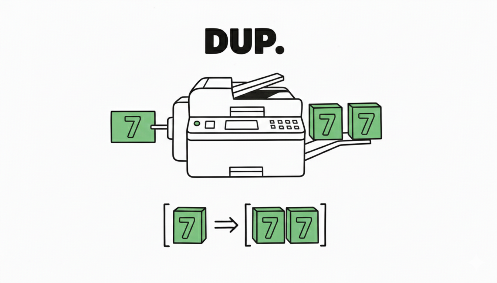
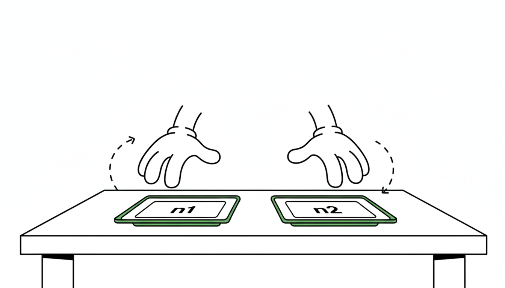
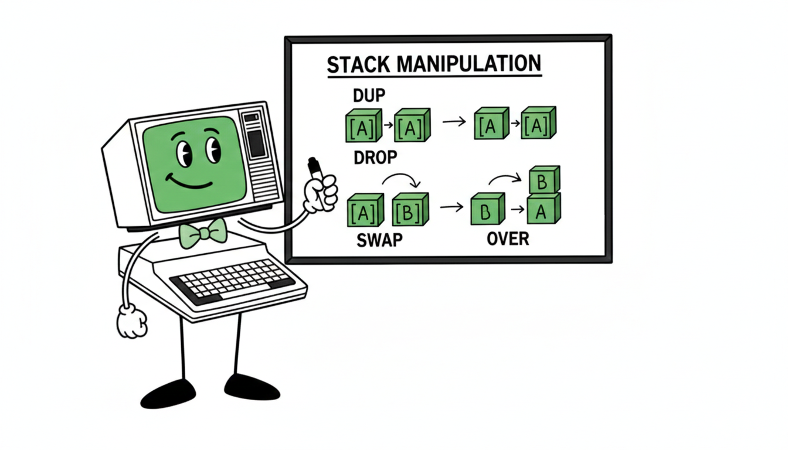

Moving Things Around
So far you've pushed numbers onto the stack and immediately consumed them. But what if you need to use a value twice? What if two values are in the wrong order for the operation you want? What if you want to peek at a value without destroying it?
Forth has four words for exactly these situations. Together they let you rearrange the stack into whatever shape your next operation needs.
DUP — Use It Twice

DUP duplicates the top of the stack. The original
stays; a copy appears on top.
DUP ( n -- n n )
Copy the top of stack. Both copies are identical.
With DUP, you can use a value twice without
pushing it twice. Here's a word that prints any letter doubled:
: LETTER CHAR A + EMIT ; : DOUBLE DUP LETTER LETTER ; 7 DOUBLE HALT
Stack trace: 7 DOUBLE enters with [ 7 ].
DUP makes it [ 7 7 ]. First
LETTER prints H and leaves [ 7 ].
Second LETTER prints H and leaves [ ].
DROP — Throw It Away
DROP discards the top of the stack. Nothing is
printed; the value simply disappears.
DROP ( n -- )
Discard the top of stack.
DROP is most useful when a calculation produces a result you don't need. For example, if you pushed something by mistake:
7 14 DROP LETTER HALT
Push 7, push 14, DROP discards 14, leaving 7.
LETTER prints H. The stack is clean.
A well-balanced Forth program leaves the stack in the same
state it found it. DROP is one way to clean up
any leftovers before finishing.
SWAP — Put It in the Right Order

SWAP exchanges the top two items on the stack.
This matters most when operand order is important — like
subtraction.
SWAP ( n1 n2 -- n2 n1 )
Exchange the top two stack items.
Remember: - computes n1 minus n2, where
n1 is the second item and n2 is the top. Suppose you
accidentally pushed them in the wrong order:
\ Wanted: CHAR Z - CHAR A (Z minus A = 25) \ Got them backwards: CHAR A CHAR A - CHAR Z CHAR A - \ stack: [ 25 | 0 ] \ TOS = 25 (Z's offset), NOS = 0 (A's offset) \ This would compute 0 - 25 = -25 ... wrong! SWAP - \ fix it: SWAP → [ 0 | 25 ], then 25 - 0 = 25 LETTER \ prints Z
Without SWAP you'd have to restructure the whole
expression. With it, you just flip the top two items into the
order the next operation expects.
OVER — Peek Without Losing
OVER copies the second item and puts the
copy on top. The original second item stays where it is.
OVER ( n1 n2 -- n1 n2 n1 )
Copy the second stack item to the top. Both copies of n1 remain on the stack.
| Step | Stack (TOS on left) |
|---|---|
| start | ( n2=7 n1=0 ) |
| OVER | ( 0 7 0 ) |
| LETTER | ( 7 0 ) — printed A |
| LETTER | ( 0 ) — printed H |
| LETTER | ( ) — printed A |
That gives AHA — a three-letter palindrome from just two values. The word that does this:
\ MIRROR ( n1 n2 -- ) prints n1, n2, n1 : MIRROR OVER LETTER LETTER LETTER ;
Call it like this (push n1 first, n2 second):
CHAR A CHAR A - \ push 0 (A) — becomes NOS CHAR H CHAR A - \ push 7 (H) — becomes TOS MIRROR HALT \ prints AHA
The Chapter 4 Program
Putting DOUBLE and MIRROR together:
: LETTER CHAR A + EMIT ; : SP 32 EMIT ; : DOUBLE DUP LETTER LETTER ; : MIRROR OVER LETTER LETTER LETTER ; : MAIN CHAR H CHAR A - DOUBLE \ HH SP CHAR A CHAR A - \ push A (0) — NOS CHAR H CHAR A - \ push H (7) — TOS MIRROR \ AHA CR ; MAIN HALT
DOUBLE uses DUP to avoid pushing 7
twice. MIRROR uses OVER to produce a
palindrome from two values. The top-level word MAIN
orchestrates everything and leaves the stack clean.
The four stack words work together. You'll often find yourself
using SWAP to fix ordering before an arithmetic
operation, then DUP to keep a result you'll need
again, and DROP to clean up what you don't.

-
Use
DOUBLEto print any letter of your choice doubled. Then try tripling a letter — what stack words do you need? -
Write a word
TRIPLEthat prints a letter three times. Hint:DUP DUPleaves three copies on the stack. -
Use
SWAPto print two letters in reverse order. Push A then B, use SWAP, then print both. -
What would happen if you wrote
: MIRROR2 OVER OVER LETTER LETTER LETTER LETTER ;? Work it out on paper first, then try it. (Hint: what does the stack look like after two OVERs?)
Forth Words
- DUP
- ( n -- n n ) duplicate TOS
- DROP
- ( n -- ) discard TOS
- SWAP
- ( n1 n2 -- n2 n1 ) exchange top two
- OVER
- ( n1 n2 -- n1 n2 n1 ) copy second to top
Patterns
DUP to reuse a value without pushing twice
SWAP to fix operand order for - and other non-commutative ops
OVER to peek at the second item
DROP to clean up unwanted values
Concepts
Stack reshaping before operations
Keeping the stack balanced
Building words like DOUBLE and MIRROR from primitives